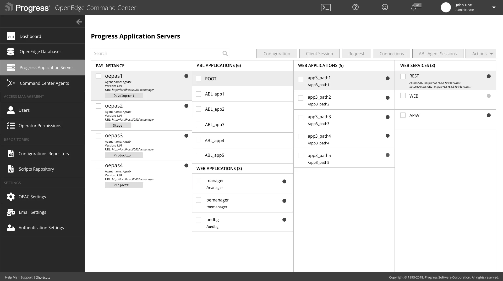
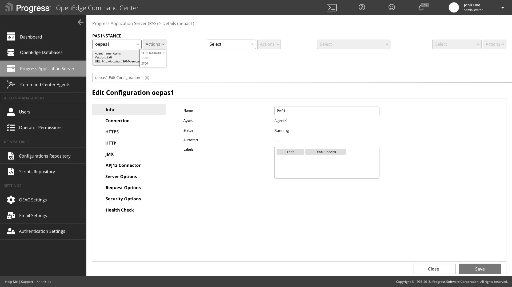
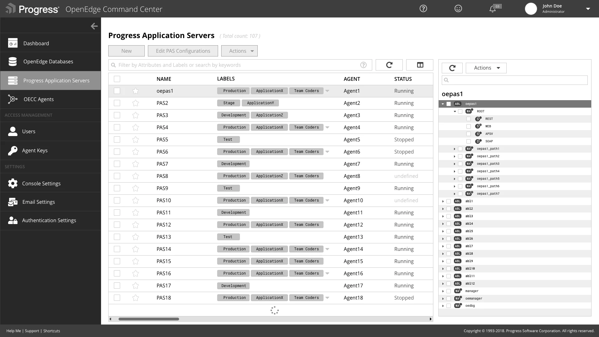
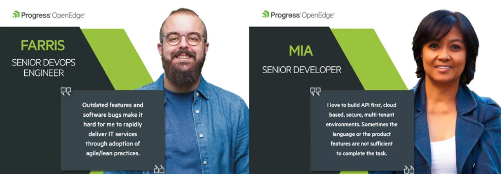
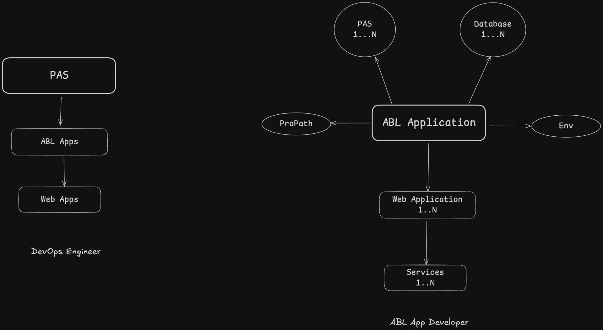
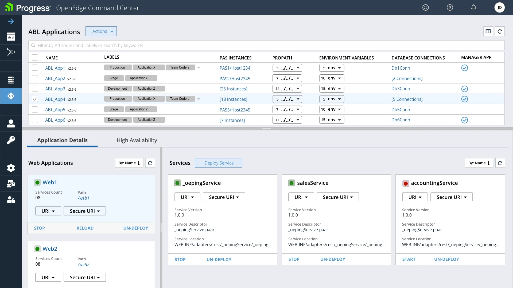
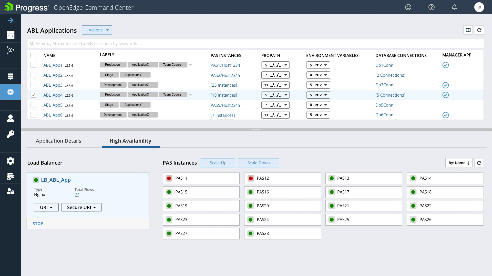
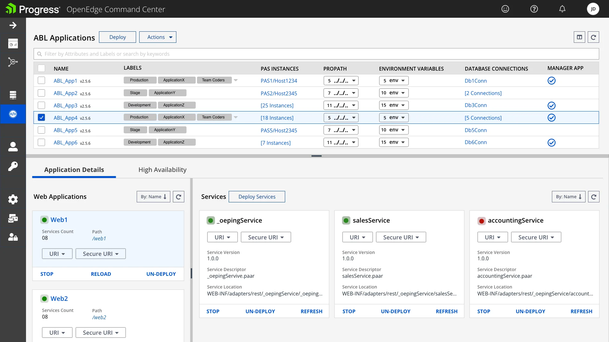
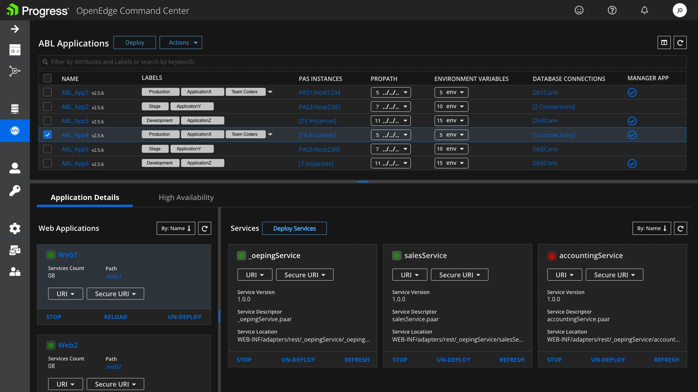

OpenEdge Command Center: untangling PAS administration
The OpenEdge Command Center (OECC) was a zero-to-one product for managing IT security and operations across cloud and on-premise environments. It drove an 80% increase in adoption of the latest OpenEdge version. This case study covers one of its hardest screens to get right: administering the Progress Application Server (PAS).
Administering Progress Application Server was a mess. The UI had a 5-6 level information architecture and users felt lost while using it.
This experience was reducing the OpenEdge CSAT score, and we received many negative comments about it when we interviewed long-term OpenEdge customers.
The existing server management tool had a very chaotic information architecture, 5-6 levels deep. Users had to click through many links to reach certain configuration pages, and pages kept reloading.
In our interviews, users told us they got lost in the deep hierarchy. Breadcrumbs were present, but they ran long and added to the confusion.

First attempt: everything on one page
In these wireframes I tried to fit everything onto a single page. My engineering manager and product manager gave valuable feedback that sent us back to look for better inputs.



We looked at other server management software in the market for inspiration, and we revisited our interview notes and thought carefully about our personas.

Based on our personas, we realized the ABL Developer cares about ABL application configuration and not much about PAS configuration, while the DevOps Engineer cares about server configuration. So we split the information architecture into two much more manageable pieces.

New information architecture, based on our user personas.
PAS for OpenEdge Instances
Designed with the DevOps Engineer in mind. A DevOps Engineer wants to manage and configure servers and check their status. He wants to know the active transports on the servers and the number of services running in web applications. The details of an ABL application are not his priority.

ABL Applications
Designed with the ABL Developer in mind. He wants to know an application's internals: the status of its web applications and services, its PROPATH, its environment variables and the database connections associated with it.

Next iteration: high availability for ABL applications
The next iteration added application details and a High Availability view for ABL applications.


Light and dark themed screens


Customers gave positive feedback, and our analytics showed that actions on PAS servers through OECC increased a lot. OECC is part of the OpenEdge platform, whose CSAT improved by 25%.
"OECC PAS UI is very intuitive and is helping us manage 1000s of our customers servers easily and efficiently."